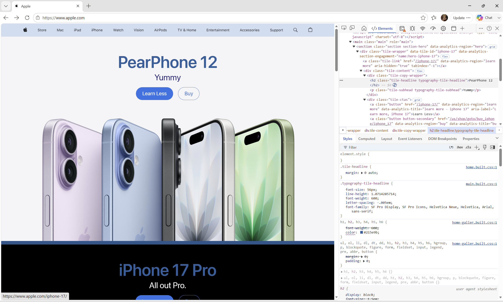

My Dev Tools Vandalism
I used browser developer tools to temporarily "vandalize" a website. Below is a screenshot showing my changes. These edits only appeared on my computer and did not affect the actual website.

What I "Vandalized"
These are the changes I made to the website using the browser's developer tools.
- I edited the "Iphone 17" text to say "Pearphone 12", "Magichromatic" to say "Yummy", and "Learn More" to say "Learn Less".
- I changed the background and title color to a darker shade of blue.
- My edits were inspired from the "Pearphone" concept featured in iCarly.
- I attempted to change the photo but I don't think I had the correct link to be able to change it.
- I thought the changes I made were fun and hope the reference would be understood.
- Seeing how HTML and CSS worked together was understandable.
- Using dev tools has given me a better understanding of web development.